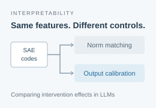

Strength Controls Change How Interventions Compare Across Sparse Autoencoder Codes
arXiv preprint, 2026 · Under review at ACL Rolling Review (ARR)
How should we hold intervention strength constant when studying an LLM? We compare norm matching and output calibration across Gemma and Llama settings, showing that the choice of control changes agreement with a reference intervention.
arXiv
PDF
BibTeX
@misc{zhang2026strength,
title={Strength Controls Change How Interventions Compare Across Sparse Autoencoder Codes},
author={Jinchen Zhang and Zheyuan Liu and Yihan Zhu and Meng Jiang},
year={2026},
eprint={2610.26489},
archivePrefix={arXiv},
primaryClass={cs.LG},
url={https://arxiv.org/abs/2610.26489}
}